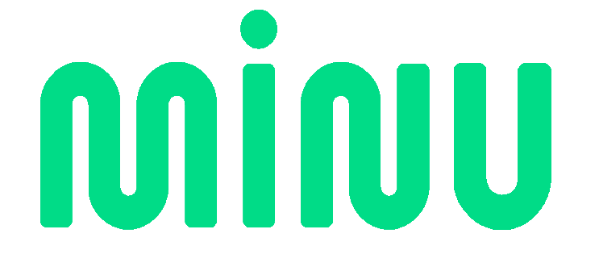

Transformamos seus
dados em |
A Brain cruza dados de mídia, fidelidade e consumo com milhões de datapoints do ecossistema Arka e devolve ações prontas para executar.
O que vamos ver hoje
- 01O problema dos dados fragmentados
- 02Como a Brain funciona
- 03Clean Data Room
- 04Plano de 90 dias
- 05Próximos passos
Relatório gera diagnóstico. A Brain gera a próxima ação.
Dados fragmentados
Mídia, vendas, ERP, CRM e fidelidade vivem em sistemas que não se cruzam.
Privacidade
LGPD e o fim dos cookies de terceiros travam o cruzamento entre marcas.
Insight sem ação
O relatório chega, a execução fica desconectada e o resultado não volta.
Cada sistema conta um pedaço da história
Ferramentas genéricas de analytics não enxergam a peculiaridade de cada operação. A Brain junta as partes num só lugar e adiciona o contexto do seu time.
Seu time conversa com a Brain. Nossos agentes fazem o resto.
Dados organizados com contexto vivo
Tudo num Clean Room, com uma camada semântica das conversas e documentos do seu time.
Descreva, pergunte e decida
Você fala como falaria com um colega; os agentes comparam cenários e devolvem um plano.
Ação imediata com resultados mensuráveis
Os agentes executam nas suas ferramentas e cada resultado volta para alimentar o próximo passo.
de relação da Minu com o Banco do Brasil, a base de dados que alimenta a Brain.
Seu dado não precisa sair de casa para voltar com insights.

A Brain se conecta ao armazenamento que você já usa. O dado não é copiado nem muda de dono.
O cruzamento com o ecossistema acontece num ambiente neutro: nenhuma parte vê o dado bruto da outra.
O placar antes da explicação
por ano
da receita da Minu
marcas parceiras
Categoria C puxa o crescimento: a barra da história ganha ciano; as demais ficam em azul.
KPIs: dados do projeto · gráfico: dados ilustrativos
De onde vem o 2x
Índice do faturamento conjunto Minu + Core (hoje = 100). Exemplo ilustrativo da construção.
A Brain não trabalha sozinha

Fidelização pela Minu, mídia e campanhas pela Core, inteligência pela Brain.
Não somos CDP e nem BI. Somos muito mais.
Enquanto plataformas tradicionais dependem de integrações genéricas, a Brain constrói parcerias diretas com o ecossistema.
Dados de consumo, fidelização e mídia via parceiros, sem integração genérica.
O comportamento dos seus clientes comparado a milhões de datapoints do ecossistema Arka.
O insight vira ação executada pelos agentes, sem trabalho braçal do seu time.
O que cada categoria entrega
Por onde começar
Alto impacto e baixo esforço primeiro: o quadrante destacado vira o piloto. Itens ilustrativos.
Dashboard executivoSegmentação
Integração via API
Alertas
Camada de LLM
Três fases, uma entrega por vez
60 dias
Dashboard inicial
Indicadores executivos no ar.
90 dias
Integração via API
Dados fluindo sem planilha.
Depois
Camada de LLM
O time pergunta, a Brain responde.
Fora de escala · trecho tracejado = futuro
As peças por trás das soluções
Painel de 360°
A jornada completa do cliente num só lugar.
Painel de Produtos
Performance de SKU, ticket médio e elasticidade de preço.
Brain Score
Crédito alternativo a partir de dados transacionais.
Campaign Analytics
Atribuição multi-touch e ROI de mídia.
Converse com seus dados
Perguntas em linguagem natural.
Não saia mais do zero
Campanhas, criativos e audiências organizados por indústria e canal. Cada campanha nova deixa as outras mais precisas.

O que precisamos decidir hoje
Aprovar o piloto
Escopo de 60 dias e indicadores de sucesso.
Liberar acesso
Conexão ao armazenamento que vocês já usam.
Definir o time
Um responsável de cada lado.
Vamos começar pelo piloto de 60 dias?
Sinapses nada óbvias.
contato@brain003.com